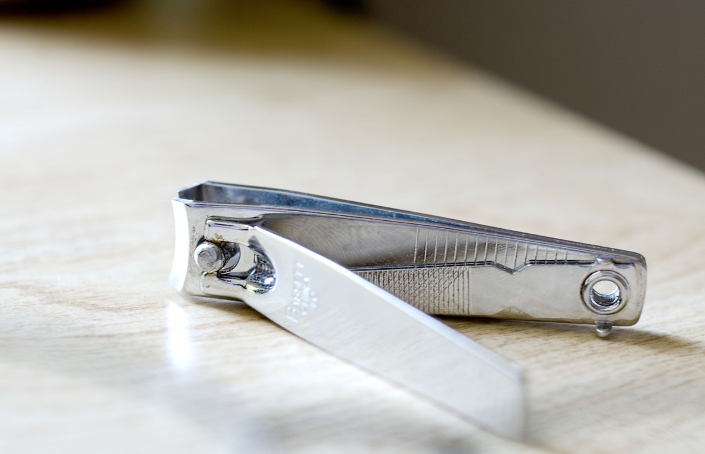

不习惯留指甲，可能是小时候练琴的习惯，必须得垂直按下去没东西挡着才觉得舒坦。所以几乎每周都在剪，差不多长出两三毫米就非得剪不可。好的指甲剪可以毫无感觉就轻巧剪去，曾经团购过一次足疗，包含一个修脚的服务，原来人家都不用指甲剪的，直接用特制的小刀就把指甲轻轻削掉了。钝一点的指甲剪总会让你有十指连心的感觉，过程中微微的酸楚感，好像在提醒你这也是身体的一部分。 每次我剪指甲都剪得特别短，本来指甲就小，剪完就像是指头上小小的一块块贴片，顶上一定会露出一小块肉垫，秃秃的。每次我妈看见都会说不要剪那么多，留点好看。但不知道为什么一直没能接受留指甲这种审美。既然从爪到甲的变短是一种进化，干嘛还要留那么长，逆向任其生长，还要往上面描描画画，贴一堆亮钻，我一直在想那些做完美甲的一双镶满亮钻的手，洗澡怎么办，洗头怎么办，敲个字都麻烦吧，更不用说干活了，当然这样的手是不用干活的，只需要捏稳鸡尾酒杯就行了。 前两天偶然看到原来指甲还能入药，性味甘、咸、平，利咽，明目，止血。用于咽喉肿痛，目赤，尿血。看来咬指甲也不全是坏事，咬的可是药材。没事咬咬没准顺带还能治好咽炎，这么看来就更不该留长了，多浪费，长点咬点，咬着不过瘾就剪下来泡水，这才叫物尽其用。